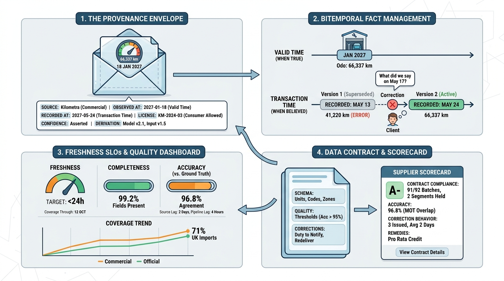

Part II — VEHICLE: Identity, Specification and History
Where Did This Fact Come From? Provenance, Freshness and Data Quality

Image generated by Google Gemini (gemini-3-pro-image-preview)
Part II — VEHICLE: Identity, Specification and History

Image generated by Google Gemini (gemini-3-pro-image-preview)